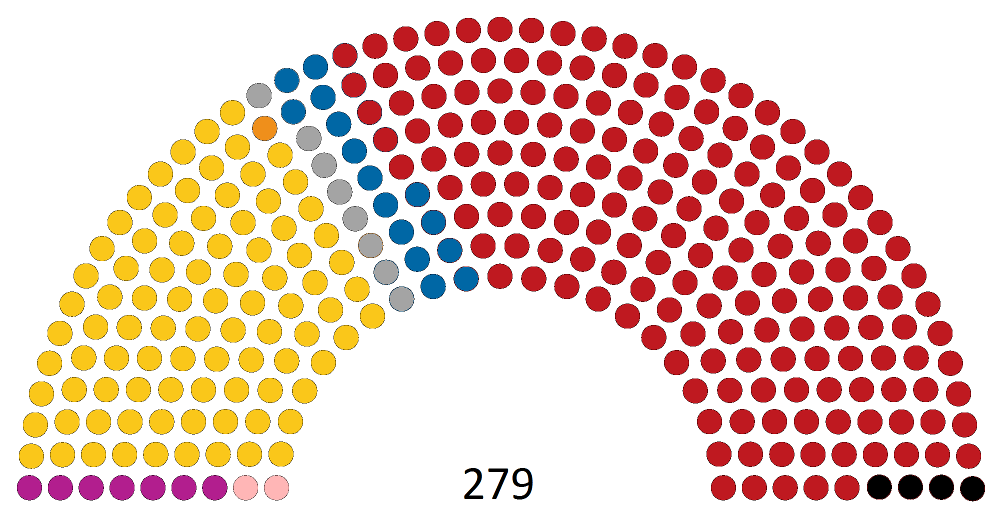
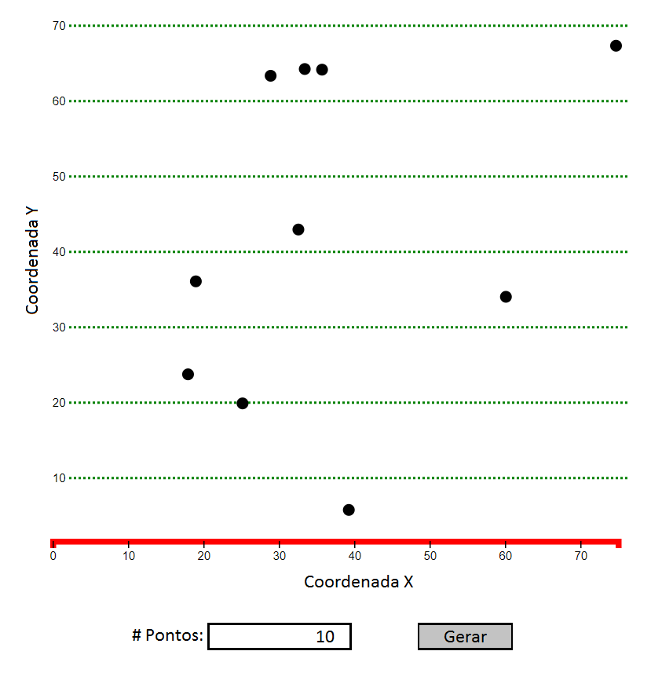
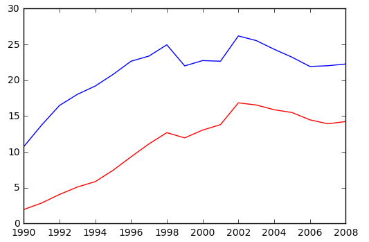

Visualização de Dados 2017.2 Lista de Exercícios 1
Informações Gerais
O objetivo desta lista é praticar os conceitos vistos em sala e construir uma base de código que será possivelmente útil para o projeto da disciplina.
É recomendada a leitura dos capítulos 3 a 8 do livro Interactive Data Visualization for the Web e também o uso da documentação da Mozilla Developer Network.
Data de Entrega
A entrega deverá ser feita via GitHub até 22/08/2017 até 23:59. Veja as instruções para entrega no Google Classroom.
Problema 1
Crie um arquivo chamado problema1.html. Neste arquivo crive um elemento svg que replica cada uma das figuras abaixo. A essência da figura deve ser mantida, embora que o posicionamento exato dos itens pode variar para cada resposta.

OBS: Para esse exercício não é necessário o uso de D3 (mas pode ser usado caso desejado).
Problema 2
Para a solução deste problema, crie um arquivo
problema2.html e outro chamado
problema2.js. Neste problema, incrementaremos o gráfico de dispersão (
scatter plot) que implementamos em sala.
O objetivo é criar um gráfico de dispersão que plote dados dinâmicos, seguindo um parâmetro dado pelo usuário. Para tanto, crie uma página html que contém o gráfico de dispersão, um text field de entrada e um botão, como na figura abaixo:

Cada vez que o botão for clicado, um número N aleatório de pontos deve ser gerado, onde N é o valor presente no text field (valor default deve ser 10). Os pontos gerados devem ser da forma (x,y), com x e y entre 0 e 70. As coordenadas x e y devem ser usadas para posicionar os pontos no scatter plot. O gráfico deve conter eixos, seguindo o padrão da figura acima (cores, largura, pontilhamento) e labels para os eixos.
Problema 3
Para a solução deste problema, crie um arquivo
problema3.html e outro chamado
problema3.js. Neste problema, o nosso objetivo é criar uma função que gera visualizações de séries temporais.
Como dataset de teste, usaremos os dados de incidência de AIDS por sexo no Brasil (
link). Crie um gráfico que mostre a evolução da temperatura incidência de AIDS em homens e mulheres. A curva correspondente aos dados de homens deve dever ser visualizada como uma linha azul, enquanto que a de mulheres com uma linha vermelha. O eixo X deve usar uma escala de tempo que mostra os anos no período dos dados.
O gráfico deve se assemelhar ao gráfico abaixo:
